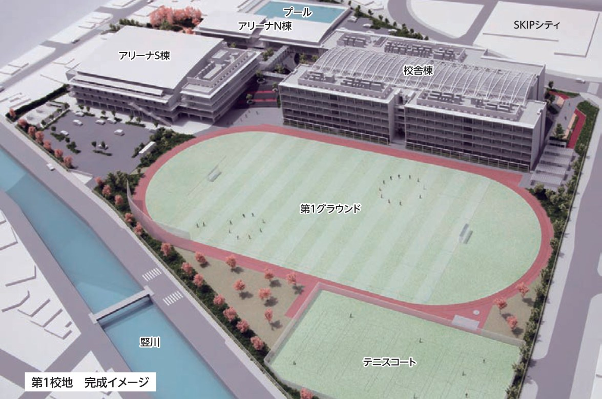
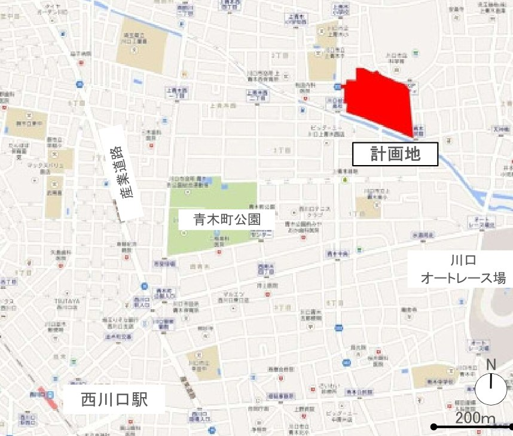

川口市立高等学校
キャンパス探検
市立3校(川口総合・市立川口・県陽)の統合で2018年4月に生まれた、川口市唯一の市立高校。 地下1階・地上5階・延床31,631.68㎡のキャンパスを、設計図書の数字と図面からどこよりも詳しく探検するサイトです。

3校の伝統がひとつになる — 学校とキャンパスの概要
少子化による生徒減への対応として2012年に策定された「新校基本計画」。市立3校を統合した新しい高校は、川口総合高校の校地(上青木3-1-40)に建て替えられ、2018年4月に開校しました。
川口市立高等学校は、川口市立川口総合高等学校・川口市立川口高等学校・川口市立県陽高等学校の3校が統合して生まれた、市内唯一の市立高校です。 施設計画のコンセプトは「市立3校の歴史と伝統を踏まえつつ、これからの時代に対応しながら本市の教育のリーディング校として、近隣のSKIPシティなどとも連携し、立地特性を生かした施設」とすること。🌐 公開情報
敷地は第1校地(上青木3-1-40・49,620.73㎡)と第2校地(朝日5-9-18・旧市立川口高校)の2つ。 第1校地には校舎棟・アリーナ棟・第1グラウンドなどが整備され、第2校地は部活動用の第2グラウンドとして再整備されました。 計画建蔽率27.38%・計画容積率61.42%というゆとりの敷地使いで、緑と広いグラウンドを備えたキャンパスになっています。
2021年4月には附属中学校が開校して中高一貫体制に。2022年度からは文部科学省のスーパーサイエンスハイスクール(SSH)にも指定され、理数・探究教育の拠点として進化を続けています。🌐 公開情報
川口市立川口総合高等学校
1929年創立の川口実科高等女学校を源流とする伝統校。新校の校舎はこの校地に建設された。
上青木3-1-40川口市立川口高等学校
1956年開校の埼玉県川口商業高校が前身。校地は第2グラウンドとして再整備。
朝日5-9-18川口市立県陽高等学校
2017年度まで生徒募集を継続。2018年3月の統合閉校とともに、在校生は新校へ転校した。
—学校データ
| 学校名 | 川口市立高等学校(計画時: 新市立高等学校) |
|---|---|
| 所在地 | 〒333-0844 埼玉県川口市上青木3-1-40 |
| 開校 | 2018年(平成30年)4月 |
| 統合元 | 川口総合・市立川口・県陽 の市立3校 |
| 教育目標 | 未来を創るしなやかでたくましい人材の育成 |
| 学科 | 全日制: 普通科/スポーツ科学コース/理数科(単位制)・定時制: 総合学科 |
| 附属中学校 | 2021年4月開校(中高一貫) |
| 指定等 | SSH(2022〜2026年度) |
周辺ガイド(敷地案内図)

インタラクティブ配置図でキャンパスを歩く
実施設計「第1校地 配置図」(資料03)の上に、29カ所の施設・出入口・駐車駐輪のスポットを配置。●をクリックすると解説と数字が表示されます。
※ スポット位置は資料のラベル位置に基づいて配置しています。敷地は第2種住居地域・基準建蔽率70%(角地+10%)・基準容積率200%。
施設インデックス
フロアガイド — 地下1階から屋上まで
「設計概要」の面積表(各棟×各階の床面積)と、実施設計の平面図(資料04〜07)を階ごとに探検できます。図面はクリックでズームビューアが開きます。
ここが見どころ — 施設のハイライト
数値では測れない、このキャンパスの特徴的な仕掛けを紹介します。
ラーニングストリート
校舎棟の2階から最上階までを貫く吹き抜け空間。上部の膜屋根が自然光を採り込み、明るく開放的な学びの縦動線をつくります。4階の渡り廊下から全体を望む構図は実施設計のイメージ図2で見ることができます。
校舎棟 / 資料01・広報大アリーナ(480席)
南北2棟のアリーナ棟には大中小3つのアリーナ(体育館)のほか、柔道場・剣道場・合宿所を整備。大アリーナはバスケットコート3面分の広さに480席の観客席を備え、大会や地域行事にも対応します。
アリーナ棟 N/S / 広報人工芝の第1グラウンド
部活動の活性化と、近隣への砂埃対策として人工芝を導入。2021年8月の完成後も第2校地(旧市立川口高校)の部活動用第2グラウンドとあわせて練習環境を支えています。
第1グラウンド / 広報環境を感じる教材
雨水・井水・地中熱を活用するなど、生徒が自然のエネルギーの力や環境の大切さを感じられる「身近な教材」となる設備を導入。
校舎棟 / 広報地域の避難施設
災害時における避難施設としての機能を備え、防災備蓄倉庫・マンホールトイレなどを整備。学校がまちの防災拠点になります。
防災 / 広報SKIPシティとの連携
キャンパスの東側(都市の門側)には映像・ITの拠点SKIPシティが隣接。「SKIPシティなどとも連携し、立地特性を生かした施設」が計画のコンセプトです。
立地 / 広報数字で見るキャンパス — 面積表と規制・駐車駐輪
実施設計「設計概要」に記載された数値をそのまま整理しました。すべての数字の出典は資料の面積表・敷地条件・配置図です。
面積表(床面積/㎡・実施設計 資料02)
建蔽率・容積率
第2種住居地域。基準建蔽率70%(角地+10%含む)・基準容積率200%に対し、計画は27.38%・61.42%とゆとりある配置。
駐車場・駐輪場の内訳
建物概要
| 建築面積 | 13,562.42 ㎡ |
|---|---|
| 延床面積 | 31,631.68 ㎡ |
| 構造種別 | RC・S |
| 階数 | 地下1階・地上5階 |
| 建物高さ | 21.89 m(≦22 m) |
| 階高 | 3.6 m |
| 敷地面積 | 49,620.73 ㎡ |
計画から開校、そして現在へ — 建設ヒストリー
2012年の基本計画から2021年のグラウンド完成まで、3つの工区に分けて段階的に建設されました。計画どおりの竣工がすべて実現しています。
完成イメージギャラリー
実施設計資料のイメージ図2点と、広報かわぐち2015年9月号に掲載された完成予想CG・室内カット9点。クリックで拡大表示できます。
実施設計 図面ビューア
資料の全10シート(イメージ図・設計概要・配置図・各階平面図・立面図・断面図+広報ページ)を高解像度で収録。ホイール/ピンチでズーム、ドラッグで移動できます。
操作: ホイールズーム / ドラッグ移動 / ダブルクリックで拡大 / ＋−ボタン / 「フィット」で全体表示 / ←→キーでシート切替 / Escで閉じる
出典と資料について
本サイトは川口市が公表した次の2つの資料を精読して作成しています。開校後の情報は公開Web情報を参照しています。
実施設計資料には「川口市に了解なしの無断転用、転載を禁じます。」の表記があります。本サイトは学習・解説目的で図面・画像を掲載していますが、これらの二次利用には川口市の了解が必要です。 また本サイトは川口市・同校の公式サイトではありません。最新の学校情報は公式サイトをご確認ください。